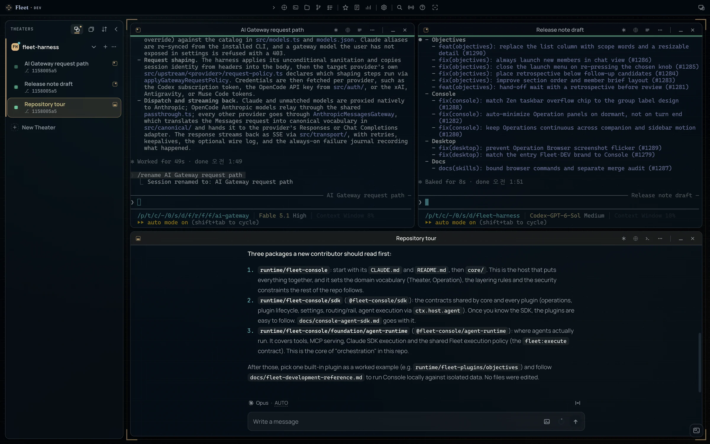
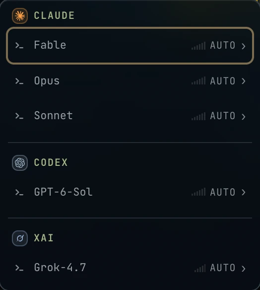
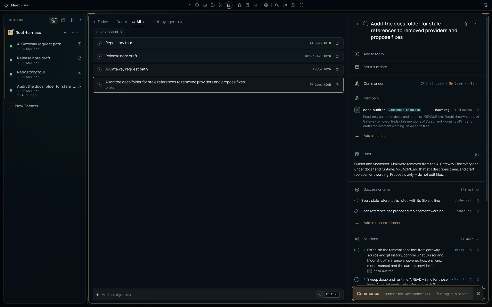
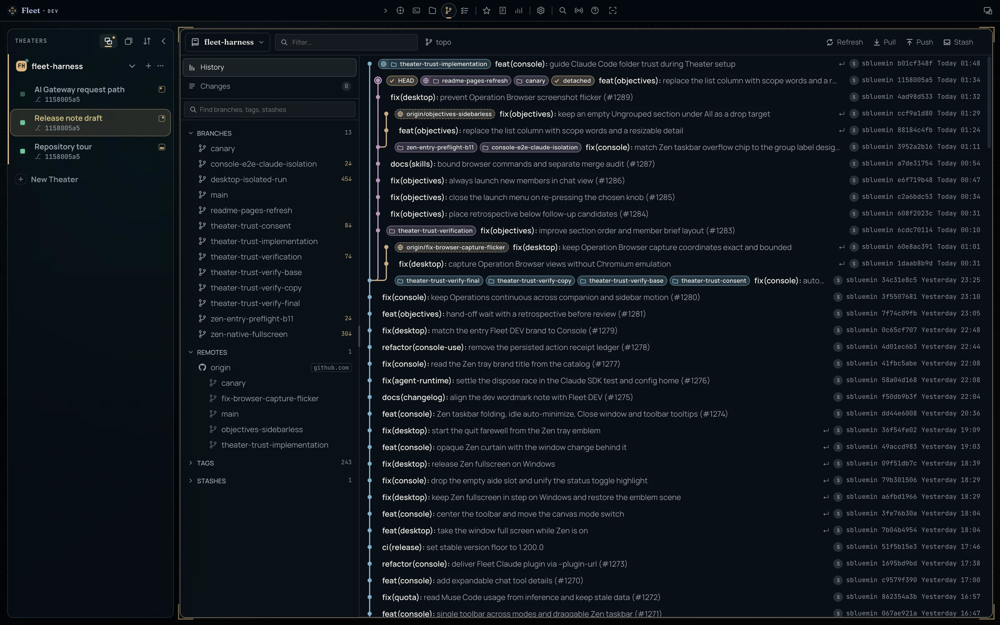
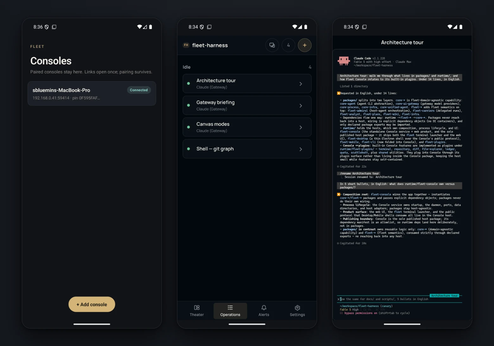

A quiet console for a fleet of coding agents.
여러 코딩 에이전트를,
하나의 조용한 콘솔에서.
Run Claude Code on every frontier model, keep each session alive on your own machine, and supervise the whole fleet from a browser, the desktop app, or your phone.
Claude Code를 어떤 프런티어 모델로든 실행하고, 세션은 내 머신 위에 살려 둔 채 브라우저·데스크톱 앱·폰 어디서든 함대 전체를 지휘하세요.
npm install -g @dotobokuri/fleet-consolefleet consoleNeeds Node.js 20.19+ and Claude Code, installed and signed in.
Node.js 20.19 이상, 그리고 설치와 로그인을 마친 Claude Code가 필요합니다.

- Theater
- A project folder you add. Every panel, tool, and session follows the active one.
- 등록한 프로젝트 폴더. 모든 패널과 도구, 세션이 활성 Theater를 따라갑니다.
- Operation
- A Claude Code session the server owns. Close the tab and it keeps running. Show it as a terminal or a chat.
- 서버가 소유하는 Claude Code 세션. 탭을 닫아도 계속 돌고, 터미널로도 채팅으로도 볼 수 있습니다.
- Objective
- Work you hand off whole. A Commander plans it, works it with member sessions, and hands it back for review.
- 통째로 맡기는 일. 지휘관이 계획하고 구성원과 함께 수행한 뒤, 검토받으러 돌려줍니다.
Every frontier model, behind one launch menu.런치 메뉴 하나 뒤의 모든 프런티어 모델.
The gateway is a local Claude Code endpoint, not an API proxy. Claude Code keeps its native agent loop and tools. Other vendors' credentials stay inside the Console and never enter the agent process, and Fleet reuses the sign-in you already have in each vendor's own CLI.
게이트웨이는 API 프록시가 아니라 로컬 Claude Code 엔드포인트입니다. Claude Code는 원래의 에이전트 루프와 도구를 그대로 쓰고, 다른 공급자의 자격증명은 콘솔 안에만 머물 뿐 에이전트 프로세스에는 들어가지 않습니다. 로그인은 각 공급자 CLI에 이미 해 둔 것을 그대로 씁니다.
ClaudeClaude Code sign-inClaude Code 로그인
Fable, Opus, Sonnet, and Haiku, at whatever version your installed Claude Code ships.
Fable·Opus·Sonnet·Haiku. 버전은 설치된 Claude Code를 그대로 따릅니다.
CodexChatGPT subscriptionChatGPT 구독
GPT-6 Astra · Sol · Luna and GPT-5.6 Terra, each at 272K, 524K, or 1M context, with a Fast twin.
GPT-6 Astra · Sol · Luna와 GPT-5.6 Terra. 각각 272K·524K·1M 컨텍스트와 Fast 쌍둥이가 있습니다.
AntigravityGoogle subscriptionGoogle 구독
Gemini 3.8 Flash · Gemini 3.1 Pro
xAIGrok subscriptionGrok 구독
Grok 4.7 · Grok 4.7 Fast · Grok Composer 2.5 Fast
Muse CodeMuse Code subscriptionMuse Code 구독
Muse Spark 1.3 · Muse Spark 1.3 Contributor
OpenCode GoAPI keyAPI 키
GLM-5.3 · GLM-5.3 Flash · DeepSeek V4 Pro · V4.1 Flash · V4 Flash Vision
ULTRACODEOne more rung on every model모든 모델에 한 칸 더
Each model carries its own reasoning ladder. ULTRACODE, at the top of every launch row, starts Claude Code at xhigh effort with standing multi-agent orchestration.
모델마다 추론 강도 단계가 따로 있습니다. 모든 런치 행의 맨 끝에 있는 ULTRACODE는 Claude Code를 xhigh 강도에 상시 멀티 에이전트 오케스트레이션까지 켠 채로 띄웁니다.
Routing and usage limits라우팅과 사용 한도
With AI Gateway routing on, subagents and workflow stages are assigned to gateway models, and providers whose usage window is nearly spent are skipped. The Usage limits meters use the same measure, so a window running hot shows up before it stops a run.
AI Gateway routing을 켜면 서브에이전트와 워크플로 단계마다 게이트웨이 모델이 배정되고, 한도를 거의 다 쓴 공급자는 건너뜁니다. 사용 한도 미터도 같은 기준을 쓰므로 실행이 멈추기 전에 한도가 빠르게 차는 것이 보입니다.

/model picker.
캔버스를 우클릭하세요. Claude의 모델이 먼저 오고, Settings → AI Gateway에서 켠 모델이 뒤따릅니다. Claude Code의 /model 선택기에도 같은 목록이 나옵니다.
Hand off work that takes more than one turn.한 턴으로 끝나지 않는 일은 목표로.
Write what you want and how you'll know it's done. A Commander session plans the work, carries it out with member sessions, and hands it back with a retrospective.
원하는 결과와 완료를 판단할 기준을 적으세요. 지휘관 세션이 일을 계획하고, 구성원 세션과 함께 수행한 뒤, 회고와 함께 돌려줍니다.
Brief브리핑
Describe the work and add success criteria.
할 일을 적고 달성 기준을 붙입니다.
Plan계획
The Commander lays out missions, prerequisites, and member sessions. Nothing runs yet.
지휘관이 미션과 선행 조건, 구성원 세션을 짭니다. 아직 아무것도 실행되지 않습니다.
Commence개시
Missions run on the Commander or on members, each with its own role, model, and effort.
미션은 지휘관이 직접 하거나 구성원이 맡습니다. 구성원은 저마다 역할과 모델, 강도가 다릅니다.
Hand-off인계
You review and complete it. Follow-up candidates can become new objectives.
검토하고 완료합니다. 후속 후보는 새 목표로 이어 갈 수 있습니다.

A canvas that arranges itself.스스로 정렬되는 캔버스.
Operations live on an infinite canvas. You choose how much of the arranging you do yourself.
Operation은 무한 캔버스 위에 놓입니다. 배치를 어디까지 직접 할지는 직접 고릅니다.
Cruise
Place panels anywhere. Station Keeping keeps them from overlapping.
패널을 원하는 곳에 둡니다. Station Keeping이 서로 겹치지 않게 간격을 지킵니다.
Align all모두 정렬
Lays every panel out as a grid, columns, or rows. Toggle it off and each panel returns to where it was.
모든 패널을 격자·열·행으로 한 번에 늘어놓습니다. 끄면 각자 원래 자리로 돌아갑니다.
AltFSnap layouts스냅 레이아웃
Drag a panel to the top edge for halves, thirds, 2×2 and more. Snap Assist offers panels for the empty slots.
패널을 위쪽 가장자리로 끌면 반·삼분할·2×2 같은 자리에 붙습니다. 빈 칸에는 Snap Assist가 다른 패널을 제안합니다.
⌘Alt←→War Room
Puts one waiting Operation on stage at a time, across every Theater.
모든 Theater에서 응답을 기다리는 Operation을 하나씩 무대에 올립니다.
AltTZen
Hides the chrome and leaves a slim taskbar of Theaters and Operations. In the desktop app it goes full screen.
크롬을 걷어 내고 Theater와 Operation만 담은 얇은 작업 표시줄을 남깁니다. 데스크톱 앱에서는 전체 화면이 됩니다.
⌘AltZEvery shortcut can be rebound. On Windows and Linux, ⌘ is Ctrl.
모든 단축키는 다시 지정할 수 있습니다. Windows와 Linux에서는 ⌘ 대신 Ctrl입니다.
The project, beside the session.세션 옆에 펼쳐지는 프로젝트.
The toolbar opens tools that follow the active Theater, so you never leave the Operation you're watching.
도구 막대에서 여는 도구들은 활성 Theater를 따라갑니다. 지켜보던 Operation을 떠날 필요가 없습니다.

Repository저장소
History, changes, compare, worktrees, branches, tags, stashes.
히스토리, 변경 사항, 비교, 워크트리, 브랜치, 태그, 스태시.
Files파일
A tree with quick peek, pinned folders, and git tints.
빠른 미리보기, 고정 폴더, git 상태 색을 갖춘 트리.
Shell
One terminal for the whole Console, a keystroke away.
콘솔 전체가 함께 쓰는 터미널 하나, 키 한 번이면 열립니다.
Codex
The project wiki. Experimental Cowork drafts edits you apply.
프로젝트 위키. 실험 기능 Cowork가 수정안을 쓰고, 적용은 내가 합니다.
Skills스킬
Browse and install skills.
스킬을 둘러보고 설치합니다.
Ledger · Usage limits원장 · 사용 한도
Token spend and provider quotas.
토큰 지출과 공급자별 한도.
Session Analyst세션 분석가 AltA
Reads one Operation without disturbing it, and answers what happened, what needs review, or how to hand it off.
Operation 하나를 방해하지 않고 읽어서 무슨 일이 있었는지, 무엇을 검토해야 하는지, 어떻게 인계할지 답합니다.
Operation Browser AltB DESKTOP데스크톱
A browser the agent drives on the same tabs you see. Annotate a page and send it back.
내가 보는 탭을 에이전트가 그대로 조작하는 브라우저. 페이지에 주석을 달아 넘길 수 있습니다.
Console Use · Computer Use
Agents can operate the Console itself, and on a Mac, other apps. Both are granted per Operation, and each request is approved inside the panel.
에이전트가 콘솔 자체를, Mac에서는 다른 앱까지 다룰 수 있습니다. 둘 다 Operation마다 따로 허용하고, 요청은 패널 안에서 하나씩 승인합니다.
When the server owns the session, the screen is a choice.서버가 세션을 소유하면, 화면은 고르는 것이 됩니다.
Desktop데스크톱
A thin native shell for macOS, Windows, and Linux. It manages its own Console runtime, updates itself on macOS and Windows, and hosts the Operation Browser.
macOS·Windows·Linux용 얇은 네이티브 셸. 콘솔 런타임을 스스로 관리하고, macOS와 Windows에서는 스스로 업데이트하며, Operation Browser를 품습니다.
Remote access원격 접속 EXPERIMENTAL실험
Off by default. Once on, the Console opens only to devices you pair.
기본으로 꺼져 있고, 켜더라도 페어링한 기기에만 열립니다.
- Access links work once and expire in 15 minutes.
- Every link is pinned to the Console's certificate.
- One device controls at a time; others watch.
- Public reach is a separate opt-in.
- 접속 링크는 한 번만, 15분 안에만 쓸 수 있습니다.
- 모든 링크는 콘솔의 인증서에 고정됩니다.
- 한 번에 한 기기만 조작하고, 나머지는 지켜봅니다.
- 공인 인터넷 접속은 따로 한 번 더 켭니다.
Mobile모바일 TESTERS테스터
The Operations you left on your desk, on your phone, with full scrollback. Android and iOS apps are in tester distribution.
책상에 두고 온 Operation을 지나간 출력까지 그대로 폰에서. Android와 iOS 앱은 테스터 배포 중입니다.

Everything runs on your machine.모든 것이 내 머신에서.
Loopback first루프백이 먼저
The server binds to loopback. Nothing is reachable from other machines until you turn on remote access.
서버는 루프백에만 바인딩됩니다. 원격 접속을 켜기 전에는 다른 기기에서 닿지 않습니다.
Credentials stay put자격증명은 제자리에
Provider credentials stay in the Console. The browser only ever receives one-use terminal tickets.
공급자 자격증명은 콘솔 안에 머뭅니다. 브라우저가 받는 것은 한 번 쓰고 버리는 터미널 티켓뿐입니다.
Your data, your disk내 데이터는 내 디스크에
Sessions, settings, and history live under ~/.fleet. Pick a theme, fonts, and shortcuts; English and Korean switch instantly.
세션과 설정, 기록은 ~/.fleet 아래에 저장됩니다. 테마와 글꼴, 단축키를 고르고, 한국어와 영어는 즉시 전환됩니다.
Start the console. Launch your first Operation.콘솔을 켜고, 첫 Operation을 띄우세요.
fleet console prints a local address. Add a project folder as a Theater, then right-click the canvas.
fleet console이 로컬 주소를 출력합니다. 프로젝트 폴더를 Theater로 추가하고 캔버스를 우클릭하세요.
npm install -g @dotobokuri/fleet-consolefleet console